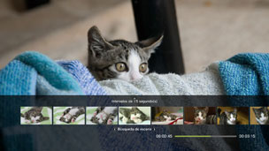
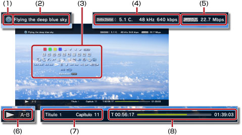

Vídeo > Uso del panel de control
Uso del panel de control
Puede realizar diversas operaciones mediante el panel de control en pantalla. El panel de control se puede mostrar u ocultar pulsando el botón  .
.
Los iconos que aparecen en esta página se definen de la siguiente forma:
 |
Vídeo grabado en un Blu-ray disc (BD) de sólo lectura. |
|---|---|
 |
Vídeo grabado en un BD regrabable. |
 |
Vídeo grabado en formato AVCHD. |
 |
|
 |
Vídeo grabado en modo VR en un DVD-R/DVD-RW. |
 |
Archivos de vídeo guardados en el almacenamiento del sistema |
 |
Archivos de vídeo guardados en un soporte de almacenamiento*. |
| * |
Para poder utilizar los soportes de almacenamiento con determinados modelos, necesitará un adaptador USB apropiado (no incluido). |
|---|
Aviso
Es posible que algún tipo de contenido presente condiciones de reproducción predefinidas por el desarrollador del mismo. En tal caso, es posible que determinados elementos del panel de control no estén disponibles.
Iconos rojo / verde / amarillo / azul

Permiten ejecutar las operaciones correspondientes al icono. Las funciones asignadas al icono varían en función del contenido.
Arriba / Abajo / Izquierda / Derecha

Permiten seleccionar un elemento.
Aceptar
Permite confirmar el elemento seleccionado.
Teclado numérico

Permite introducir números.
Menú emergente
Permite visualizar el menú emergente.
Menú
Permite visualizar el menú.
Menú superior
Permite visualizar el menú superior.
Volver
Permite regresar a un punto específico del vídeo.
Búsqueda de escena


Utilice esta función para visualizar miniaturas creadas en determinados intervalos de tiempo. Seleccione una miniatura para iniciar la reproducción del vídeo desde dicha escena en particular.

1. |
Utilice el botón |
|---|
 o
o  para seleccionar el intervalo de tiempo que desea utilizar para crear las miniaturas. Es posible seleccionar [Capítulo] o uno de los distintos intervalos de tiempo.
para seleccionar el intervalo de tiempo que desea utilizar para crear las miniaturas. Es posible seleccionar [Capítulo] o uno de los distintos intervalos de tiempo.2. |
Utilice el botón |
|---|
 o
o  para seleccionar la miniatura correspondiente a la escena que desea visualizar. La reproducción se iniciará desde la escena seleccionada.
para seleccionar la miniatura correspondiente a la escena que desea visualizar. La reproducción se iniciará desde la escena seleccionada.Notas
- La opción [Capítulo] únicamente puede seleccionarse para contenido de vídeo que incluye información de capítulos.
- La función de búsqueda de escenas no puede utilizarse para contenido de vídeo de una duración inferior a un minuto.
- La función de búsqueda de escenas no puede utilizarse con algunos tipos de contenido de vídeo.
- Cuando seleccione una miniatura, se reproducirá una vista previa de la escena durante aproximadamente 15 segundos.
Ir a


Permite iniciar la reproducción desde un capítulo o código de tiempo especificado.
| Título X | Permite especificar el número del título. |
|---|---|
| Capítulo X | Permite especificar el número del capítulo. |
| XX:XX / XX:XX:XX | Permite especificar el tiempo. |
Nota
En función del archivo de vídeo, es posible que no pueda utilizar (Ir a).
Opciones de ángulo
Permiten seleccionar uno de los ángulos de visualización disponibles del contenido grabado con varios ángulos.
Opciones de audio
Permiten seleccionar una de las opciones de audio disponibles del contenido grabado con varias pistas de audio.
Opciones de subtítulos
Permite seleccionar una de las opciones de subtítulos disponibles para el contenido grabado con varios idiomas de subtítulos. Los subtítulos se pueden seleccionar cuando el contenido es compatible con los subtítulos.
Notas
- Para mostrar los subtítulos, debe dirigirse a
 (Ajustes) >
(Ajustes) >  (Ajustes de vídeo) > [Subtítulos] y ajustarlo en [Sí].
(Ajustes de vídeo) > [Subtítulos] y ajustarlo en [Sí]. - El ajuste de subtítulos solo se encuentra disponible en los sistemas PS3™ que se venden en Norteamérica.
Opciones de estilo de subtítulos
Permiten seleccionar una de las opciones de visualización disponibles del contenido grabado con varios estilos de subtítulos.
Control de volumen
Permite ajustar el nivel de salida del volumen del contenido reproducido en la categoría  (Vídeo). Seleccione uno de los nueve niveles disponibles.
(Vídeo). Seleccione uno de los nueve niveles disponibles.
Notas
- El sonido puede distorsionarse si el nivel de salida de volumen es demasiado alto. Si esto ocurre, disminuya el nivel de salida de volumen.
- Esta opción se puede desactivar cuando se utilicen ciertos dispositivos de vídeo o cuando se emitan ciertos tipos de audio.
Ajustes de AV
Configure los ajustes de salida relativos a la emisión de contenido reproducido en (Vídeo). Los elementos mostrados variarán en función del contenido.
| Reducción de ruido de fotograma | Elija este ajuste para reducir los pequeños ruidos. |
|---|---|
| Reducción de ruido de bloque | Elija este ajuste para reducir el ruido de bloque de tipo mosaico que aparece en la pantalla. |
| Reducción de ruido de mosquito | Configure este ajuste para reducir el ruido de mosquito que aparece en los bordes de las imágenes visuales. |
| Mejorar resolución | Ajústelo para mejorar la resolución de la emisión. El valor que seleccione se refleja en [BD/DVD - Mejorar resolución] en (Ajustes) > (Ajustes de vídeo). |
| Formato de salida de vídeo | Permite ajustar el formato de salida de vídeo. Seleccione el formato de salida de vídeo para la reproducción de discos DVD o BD. El valor que seleccione se refleja en [BD/DVD - Formato de salida de vídeo (HDMI)] en (Ajustes) > (Ajustes de vídeo). |
| Y Pb/Cb Pr/Cr Super-White | Establezca este ajuste para visualizar señales Super-white. La señal Super-white puede emitirse al reproducir discos DVD, BD o AVCHD. El valor ajustado se verá reflejado en [Y Pb/Cb Pr/Cr Super-White (HDMI)] en (Ajustes) >  (Ajustes de pantalla). (Ajustes de pantalla). |
| RGB rango completo | Permite ajustar la visualización en RGB de rango completo. El valor ajustado se verá reflejado en [RGB rango completo] en (Ajustes) > (Ajustes de pantalla). |
| Control dinámico de gama | Permite ajustar el control dinámico de gama. Active o desactive la función de control dinámico de gama de su sistema PS3™ durante la reproducción de discos BD o DVD que produzcan sonido Dolby Digital. El valor que ajuste se reflejará en [BD/DVD - Control dinámico de gama] en (Ajustes) > (Ajustes de vídeo). |
| Formato de salida de audio | Permite ajustar el formato de salida de audio. Seleccione el formato de salida de audio para la reproducción de discos DVD o BD. El valor que seleccione se refleja en [BD/DVD - Formato de salida de audio (HDMI)] o [BD - Formato de salida de audio (Óptica Digital)] en (Ajustes) > (Ajustes de vídeo). |
Opciones de tiempo
Permiten seleccionar si se desea visualizar el tiempo transcurrido o el tiempo restante de un título o capítulo. Los elementos visualizados varían en función del contenido que se está reproduciendo.
Modo de pantalla
Permite cambiar el modo de pantalla.
| Normal | Elija este ajuste para mostrar el vídeo ajustado al tamaño de la pantalla pero sin modificar las proporciones. |
|---|---|
| Zoom | Elija este ajuste para mostrar el vídeo a pantalla completa pero sin modificar las proporciones. Las partes superior e inferior o izquierda y derecha del vídeo quedarán cortadas. |
| Pantalla completa | Configure este ajuste para mostrar el contenido a pantalla completa mediante la modificación de las proporciones y la extensión de la imagen. |
| Original | Elija este ajuste para que el vídeo se visualice en su tamaño original. |
Nota
En función del archivo de vídeo, es posible que no pueda cambiar el modo de pantalla.
Cambiar icono
Cambia el icono (imagen en miniatura) relacionado con un archivo de vídeo. Durante la reproducción del archivo de vídeo, seleccione (Cambiar icono) en el punto en que aparece la imagen que desea seleccionar como icono.
Notas
- En función del archivo de vídeo, es posible que no pueda cambiar el icono.
- Los archivos de vídeo de menos de dos segundos no pueden utilizarse como iconos.
Eliminar
Elimina un archivo de vídeo que se está reproduciendo.
Visualizar
Permite ver el estado de la reproducción y otro tipo de información relacionada. La información visualizada varía en función del contenido que se está reproduciendo.

(1) |
Soporte |
|---|---|
(2) |
Título |
(3) |
Panel de control |
(4) |
Codec de sonido / número de canal / índice de muestreo / velocidad de bits |
(5) |
Codec de vídeo / velocidad de bits |
(6) |
Icono de estado |
(7) |
Título / capítulo |
(8) |
Tiempo transcurrido / tiempo total |
Anterior (Volver al inicio) / Siguiente
Permiten dirigirse hasta el capítulo anterior o siguiente.
Nota
Al reproducir archivos de vídeo guardados en un soporte de almacenamiento o en el almacenamiento del sistema,  (Siguiente) no estará disponible. Asimismo, si selecciona
(Siguiente) no estará disponible. Asimismo, si selecciona  (Anterior), la reproducción se iniciará desde el principio del archivo de vídeo.
(Anterior), la reproducción se iniciará desde el principio del archivo de vídeo.
Retroceso rápido / Avance rápido
Permiten avanzar o retroceder rápidamente el contenido que se está reproduciendo. Cada vez que pulse el botón  , la velocidad de reproducción cambiará.
, la velocidad de reproducción cambiará.
Nota
Puede utilizar el joystick derecho del mando inalámbrico para realizar las operaciones de rebobinado o avance rápido durante la reproducción de contenido de vídeo. Utilice el joystick derecho para controlar la velocidad. No es posible utilizar el joystick derecho para controlar la velocidad de reproducción mientras se reproduzca el contenido de Blu-ray 3D™.
Reproducir
Permite iniciar la reproducción del contenido.
Nota
En la mayoría de los casos, la próxima vez que reproduzca contenido de vídeo que haya sido detenido durante la reproducción, éste se reanudará desde el punto donde se detuvo anteriormente.
Para reproducir desde el principio, pulse el botón PS para detener la reproducción y visualizar el menú XMB™. Seleccione el icono, pulse el botón y, a continuación, seleccione [Reproducir desde el principio] en el menú de opciones.
Pausa
Permite introducir una pausa temporal en la reproducción.
Detener
Permite detener la reproducción.
Saltar hacia atrás / Saltar hacia delante
Permiten desplazarse a un punto del vídeo situado 15 segundos hacia atrás o hacia delante.
Lento (atrás) / Lento (adelante)
Permiten reproducir en cámara lenta.
Retroceder fotograma / Avanzar fotograma
Permiten reproducir fotograma a fotograma.
Repetición A-B
Permite reproducir una sección específica del contenido de manera repetida.
1. |
Seleccione |
|---|---|
2. |
Pulse el botón |
Nota
Para cancelar la función de repetición A-B, seleccione (Repetición A-B).
Repetición
Permite reproducir el contenido de manera repetida.
Nota
Para cancelar la función de repetición, seleccione (Repetición) hasta que se muestre [Repetición desactivada].